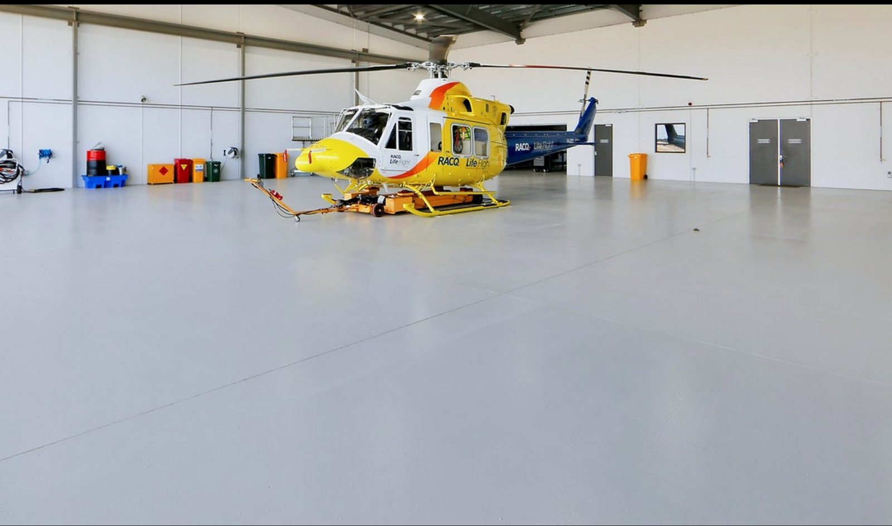
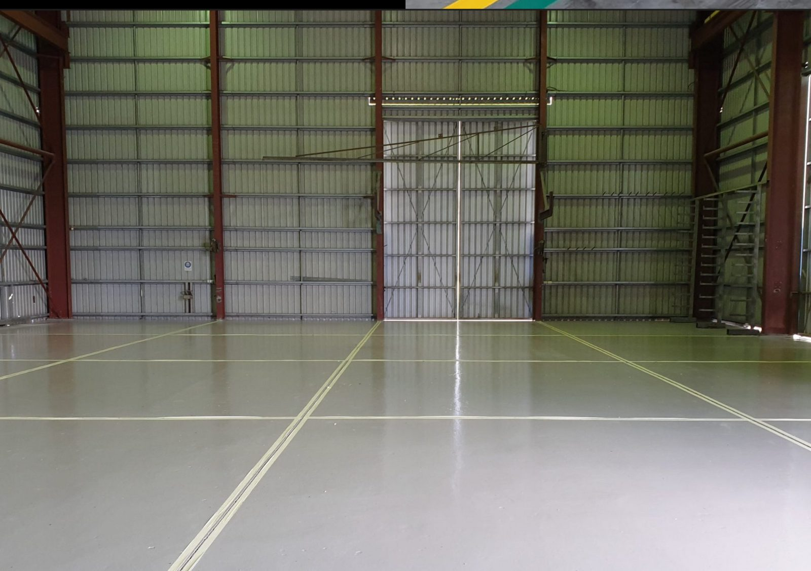

Improve staff morale
A clean, bright and cared-for workplace tells the team their environment matters. That sense of pride can lift morale, reinforce standards and make the floor feel like a place built for good work.
Industrial flooring systems · Australia
For workshops and manufacturing facilities. A clean, hard-wearing floor makes hazards easier to see, simplifies maintenance and shows your team their safety, comfort and pride in the workplace matter.
Why coat the floor?
A coating does more than protect concrete. It changes how a workshop or manufacturing floor looks, cleans and supports the people using it every day.
A clean, bright and cared-for workplace tells the team their environment matters. That sense of pride can lift morale, reinforce standards and make the floor feel like a place built for good work.
Brighter surfaces, clearer work zones and a finish selected around slip risks make hazards easier to see and manage.
A sealed, smooth surface is easier to sweep, wash and keep free of dust, oil and embedded grime.
A well-finished floor creates a stronger impression for customers, suppliers, recruits and anyone visiting the site.
Cleaner routes and more organised work areas support efficient movement, easier housekeeping and consistent daily routines.
The right coating limits dusting and contaminant penetration while making local wear easier to identify and maintain.
Industrial applications
Industrial epoxy flooring performs when the specification reflects how the site actually runs. Start with the operational load, not a generic coating package.
Oil, vehicle traffic, jacks and turning loads require a hard-wearing, easy-clean system in service bays and traffic paths.
Tyres, oils, jacks, tools and concentrated turning loads call for tougher coating build in bays and traffic paths.
Chemicals, heat, cleaning, fixed equipment and production traffic determine the preparation, coating build and access plan.
Defined work areas, pedestrian movement and staged access need a finish that supports production without creating avoidable shutdowns.

Specification logic
The coating name is only one part of performance. Preparation, moisture, repairs, film build, topcoat and cure conditions decide whether the floor becomes an asset or another maintenance problem.
Coating comparison
Both options seal concrete, improve its appearance and make cleaning easier. The right choice depends on how hard the floor works.
| Decision point | Single-pack epoxy | Two-pack epoxy |
|---|---|---|
| How it works | Supplied as one component and ready for straightforward application. | Resin and hardener are combined to create a tougher cured surface. |
| Best suited to | Low-traffic rooms and basic concrete sealing. | Workshops, manufacturing floors, service bays and factory environments. |
| Traffic and wear | Light foot traffic without demanding industrial loads. | Machinery, forklifts, heavy vehicles and constant daily wear. |
| Installation | Quicker and simpler to apply. | More involved, with mixing and a longer installation process. |
| Upfront cost | Cost-effective for budget-conscious, light-duty projects. | Higher initial investment for a stronger industrial system. |
| Durability | Practical where the floor is not heavily worked. | Much tougher and designed for a far longer-lasting result. |
| Long-term value | Good value when the use genuinely stays light. | Better long-term value where durability and performance prevent early replacement. |
Long-term performance
How long an epoxy floor lasts depends on preparation, traffic, chemicals, cleaning and the system used. Cotewell identifies the areas that will wear fastest, strengthens them for the load and plans maintenance before the whole floor needs replacing.
Forklift turns, service bays, wash areas, ramps and chemical zones.
Match preparation, coating build, topcoat and texture to the demand.
Refresh high-use sections before damage forces full-floor replacement.
When comparing quotes: ask which areas are likely to wear first and whether they can be repaired without recoating the entire floor.
See the 18-month workshop inspection
Lifetime value
A cheaper coating can become the expensive option if it shortens the replacement cycle, increases cleaning labour or forces an unplanned shutdown.
Downtime planning
Application and cure time should be agreed with the system, site conditions and return-to-service requirements.
Standard epoxy commonly needs about 5-7 days before heavy traffic returns after the area is coated.
Best fit: planned closure or slow periodWhere access allows, coating one bay or area at a time can reduce how much of the floor is unavailable.
Best fit: a full closure is not practicalMany fast-cure systems are rated for forklift and heavy-equipment traffic within 24 hours after application.
Best fit: shorter return-to-service window*Indicative only. Application and cure depend on the selected product, slab, temperature, humidity, area and site conditions. Confirm the programme in the project specification.

Manufacturing proof · Bundaberg QLD
Grillex had Cotewell install their floor coating and line marking in 2021, after months of what they describe as “chaos in the factory”. Over two years on, Grillex believe they have saved big on maintenance and cleaning costs, as well as reducing their safety risks.
Industrial flooring FAQs
Direct answers for operations, facilities and safety teams. Site conditions still decide the final specification.
Explore the learning centreService life depends on preparation, moisture, traffic, chemicals, cleaning and the system used in each zone. High-use forklift turns and service bays wear first, so specify them separately and plan local recoating rather than waiting for the whole floor to fail.
A standard epoxy installation typically takes 3-5 days to apply, followed by about 5-7 days before heavy traffic returns to the coated area. Many fast-cure systems can return to heavy traffic within 24 hours after application, subject to the system and site conditions.
There is no single correct finish for every area. Wet zones, wash bays, ramps, oily areas and pedestrian routes can need different textures. The trade-off is grip versus cleanability, so the hazard and cleaning method need to be assessed together.
Yes, when the system matches the substrate and operating conditions. Workshops need resistance to vehicles, oils, tools and turning loads. Manufacturing floors may also need chemical resistance, cleanable work zones and a staged installation around production.
Compare preparation, repairs, coating build, number of coats, slip treatment, cure programme, exclusions, maintenance and warranty. A lower rate per square metre can cost more if the wrong system fails early or creates extra shutdowns.
Site quiz · in development
A short guided quiz is being developed to help workshop and manufacturing teams identify their likely coating route before arranging a site assessment.
What works hardest on your floor?
Start with the site
Tell us the facility type, approximate area and shutdown constraints. Cotewell can then organise a site assessment and define the right next step.